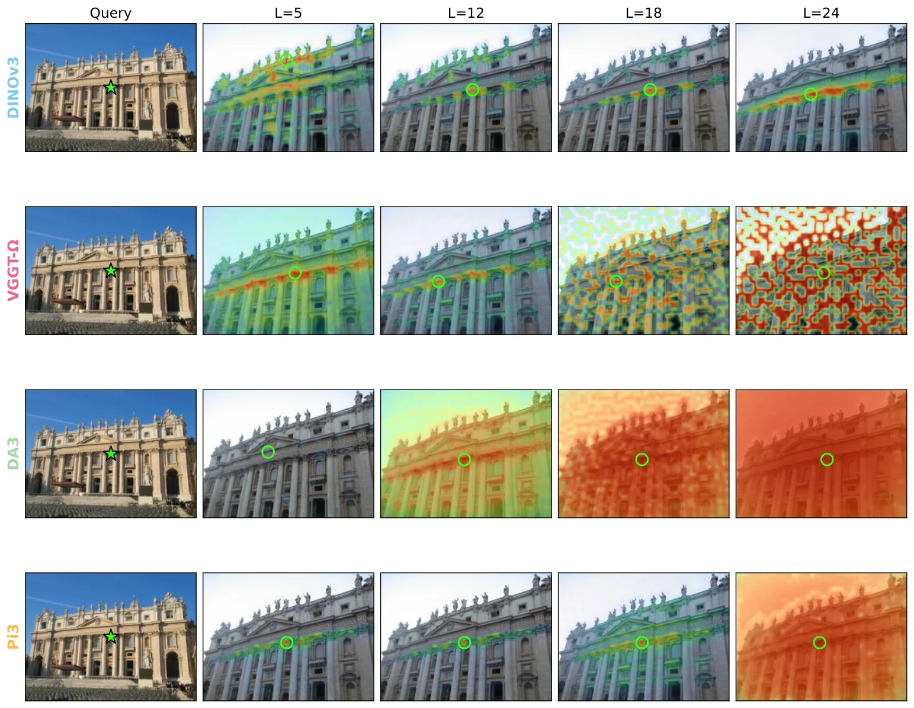
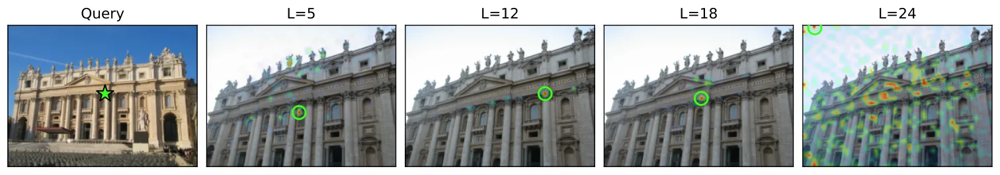
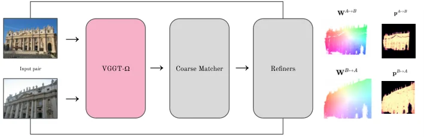

RoMa-Ω：前馈式 3D 模型对图像匹配的认知边界RoMa-$Ω$: What Feed-Forward 3D Models Know About Image Matching
S 级：直接连接 feed-forward 3D foundation representation、dense correspondence 与可部署的几何匹配；官方 HTML 提供 ScanNet-1500、WxBS、HardMatch、RUBIK、Map-free、稠密匹配、运行时和消融证据。
一句话工作总结
这篇工作把 Geometry Foundation Model 的 dense 3D 表征重新解释为匹配先验：它没有让前馈重建直接替代几何匹配，而是验证哪些层可迁移、哪些层会坍缩，并用少量结构改造把先验接到成熟 matcher。对可靠状态估计的启发是将 pointmap/特征作为对应关系与初始化先验，而不是无不确定性地直接当作状态。
完整单篇海报（待补全）
当前记录尚未达到完整海报质量门槛，暂不把摘要或评分理由冒充方法/实验结论。
待补字段：研究上下文.network（至少 2 条实质条目）。下一次任务需从论文全文或官方 HTML 提取证据后再发布。
摘要
本文系统考察前馈式 3D 重建模型的特征、pointmap 预测和相机姿态对图像匹配的贡献，并将 VGGT-Ω 特征接入 RoMa v2 的匹配器。结果显示，原始预测在中等视角变化下已经有竞争力，但在极端光照和模态变化下需要线性探测或完整匹配头；最终 RoMa-Ω 在多个匹配与定位基准上超过 RoMa v2。
Learned image matching has experienced significant progress in recent years, culminating in robust and accurate matchers such as RoMa, whose robustness is often attributed to its use of frozen DINO features. In a parallel development, feed-forward reconstruction models, such as VGGT, have been trained on ever-growing datasets to accurately regress dense 3D point maps and camera poses. The distinction between matchers and feed-forward reconstruction models has become increasingly blurred with the introduction of matching losses in models such as MASt3R and VGGT-$Ω$. This raises a natural question: what do feed-forward 3D models know about image matching? In this work, we answer this question by analyzing three scenarios: (i) zero-shot matching of patch features, (ii) direct matching of 3D point predictions, and (iii) training a full matcher on top of the learned representations. We find that, despite performing poorly in zero-shot matching, especially in later layers, feed-forward reconstruction models provide strong representations for linear probing and full matching pipelines. We further show that, even without any training, their raw predictions alone enable competitive matching, albeit only under moderate viewpoint changes and modality gaps. Based on these insights, we retrain RoMa v2 by replacing its DINO backbone with VGGT-$Ω$. Our resulting model, \ours, outperforms state-of-the-art matchers on a wide range of benchmarks, e.g. +8.1 mAA compared to RoMa v2 on WxBS.
图表/页面预览

{kind=link}

{kind=link}

{kind=link}
